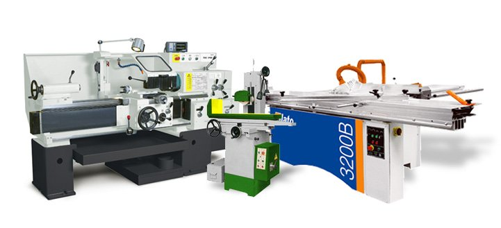
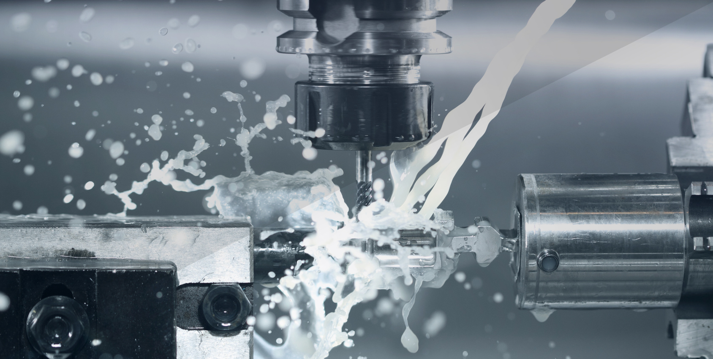

О компании

Компания "Белстанко" осуществляет продажу металлорежущих и деревообрабатывающих станков, кузнечно-прессового оборудования, станочных приспособлений, оборудования для производства мебели. Предлагаем в широком ассортименте станки: токарно-винторезные, сверлильные, фрезерные, фрезерные с ЧПУ, плоскошлифовальные, круглошлифовальные, заточные, шлифовально-заточные с ЧПУ, точильно-шлифовальные, зубофрезерные, резьбонарезные, строгальные, долбежные, отрезные, листогибы, гильотины, пресс-ножницы, трубогибы, пилорамы, циркулярные, торцовочные, четырехсторонние, фуговальные, рейсмуса, комбинированные станки, форматно-раскроечные, сушильные камеры и прочие деревообрабатывающие и металлообрабатывающие станки, а так же оборудование для производства мебели.
Начало деятельности компании – 2003 г. Прямые долгосрочные взаимоотношения со многими производителями станочного оборудования, разумная ценовая политика, а так же наличие запаса оборудования на складе, позволяют нам предлагать продукцию по оптимальным ценам и с оптимальными сроками поставки.
Предлагаем с нашего склада или под заказ продукцию заводов РФ, стран СНГ, Болгарии, Италии, Китая, в частности предприятий: ОАО Завод "ВИЗАС", ОАО "Станкозавод Красный борец", ОАО "Стерлитамакский станкостроительный завод", ОАО "ВИСТАН", ОАО "Гомельский завод станочных узлов", ОАО "Гомельский станкостроительный завод им. С.М.Кирова", ОАО "Пинский опытно-механический завод", ОАО "Астраханский станкостроительный завод", ОАО "Техноприбор", ООО "Техснаб", ООО "Кировский станкостроительный завод", ЗАО "Консар" и др.
Сотрудники компании – квалифицированные специалисты с многолетним опытом работы. По Вашему запросу мы готовы поставить продукцию, не включенную в наш общий Каталог. Дополнительно мы организуем доставку приобретенного Вами оборудования (подробнее см. раздел "Доставка") и его пусконаладку.
Мы нацелены на долгосрочное и продуктивное сотрудничество со своими клиентами и подтверждаем это реальными делами.

